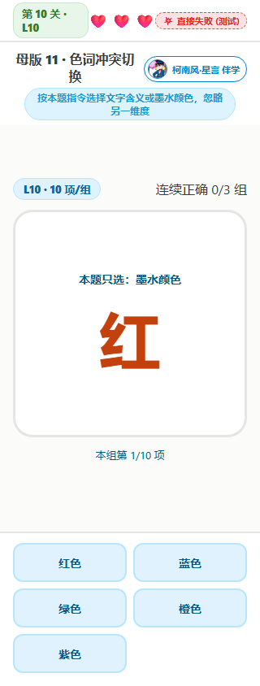
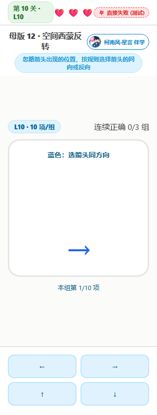
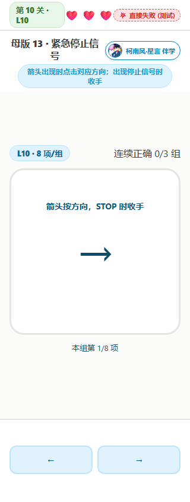
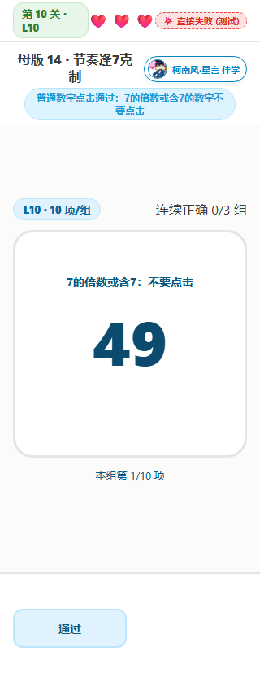
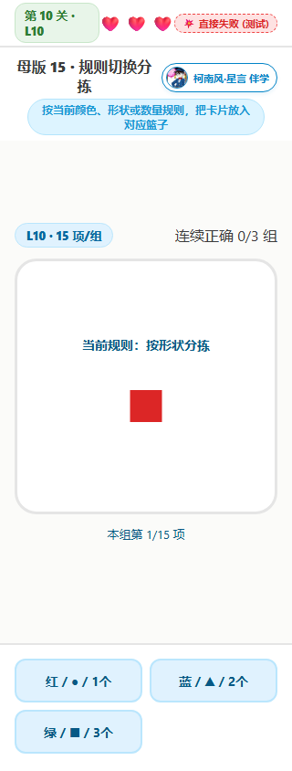
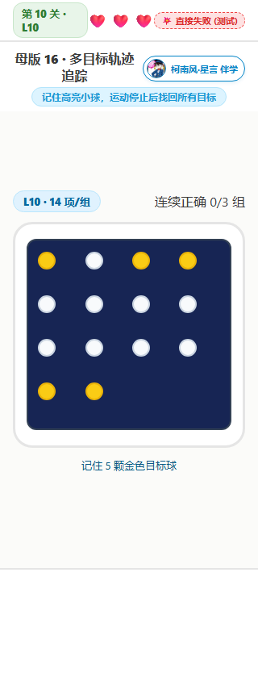
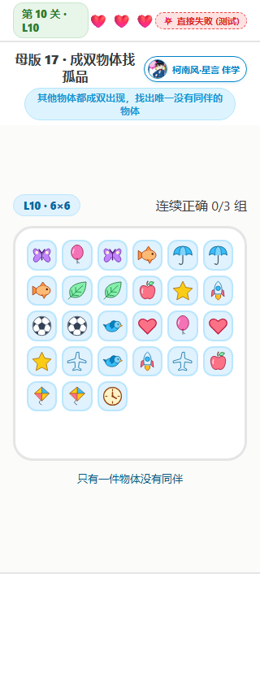
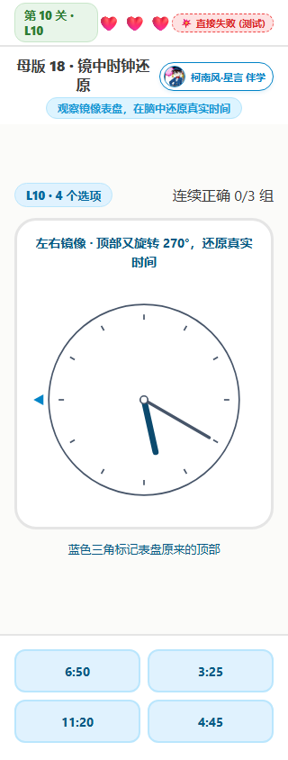
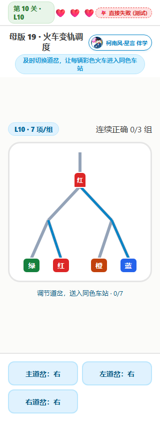
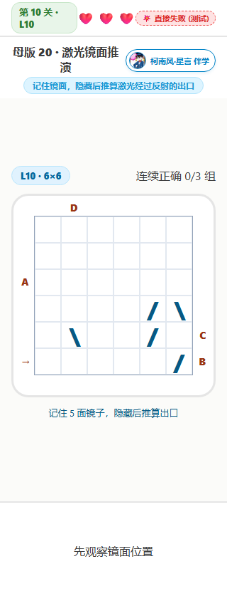

游戏 11～20 玩法报告
2026-10-01 · 本地训练版本
十款各有 10 级，每级先点击开始。每关连续正确 3 组升级；前两次失误扣心并清零本关连续进度，自动显示 2 秒重开提示后随机出新组，第三次失败显示报告；升级补满三颗心。每次结束保存本浏览器记录，并显示当天二十款游戏记录和近七日趋势。
色词冲突切换
怎么玩
逐题出现一个彩色汉字。看清“墨水颜色”或“文字含义”指令后选择对应颜色，忽略另一个维度。每组须全部答对，连续正确 3 组升级。
例子
蓝色墨水写着“红”：如果本题只选墨水颜色，选择蓝色；如果只选文字含义，选择红色。
| 关卡 | 实际参数 |
|---|---|
| L1 | 6 题/组，2 种颜色；只选墨色；冲突约 36%；每题 5 秒 |
| L2 | 6 题/组，2 种颜色；只选墨色；冲突约 42%；每题 4.75 秒 |
| L3 | 7 题/组，3 种颜色；只选墨色；冲突约 48%；每题 4.5 秒 |
| L4 | 7 题/组，3 种颜色；只选墨色；冲突约 54%；每题 4.25 秒 |
| L5 | 8 题/组，4 种颜色；只选墨色；冲突约 60%；每题 4 秒 |
| L6 | 8 题/组，4 种颜色；字义/墨色随机切换；冲突约 66%；每题 3.75 秒 |
| L7 | 9 题/组，5 种颜色；字义/墨色随机切换；冲突约 72%；每题 3.5 秒 |
| L8 | 9 题/组，5 种颜色；字义/墨色随机切换；冲突约 78%；每题 3.25 秒 |
| L9 | 10 题/组，5 种颜色；字义/墨色随机切换；冲突约 84%；每题 3 秒 |
| L10 | 10 题/组，5 种颜色；字义/墨色随机切换；冲突约 90%；每题 2.75 秒 |

空间西蒙反转
怎么玩
箭头偏侧出现。忽略它在屏幕上的位置，红色箭头选箭头的反方向，蓝色箭头选同方向。L1～L7 只有红色反向规则，L8 起两种规则随机出现。
例子
红色“→”即使出现在左边，也必须选择“←”；蓝色“→”则选择“→”。
| 关卡 | 实际参数 |
|---|---|
| L1 | 6 题/组，2 个方向；反向规则；每题 5 秒 |
| L2 | 6 题/组，2 个方向；反向规则；每题 4.7 秒 |
| L3 | 7 题/组，2 个方向；反向规则；每题 4.4 秒 |
| L4 | 7 题/组，2 个方向；反向规则；每题 4.1 秒 |
| L5 | 8 题/组，2 个方向；反向规则；每题 3.8 秒 |
| L6 | 8 题/组，4 个方向；反向规则；每题 3.5 秒 |
| L7 | 9 题/组，4 个方向；反向规则；每题 3.2 秒 |
| L8 | 9 题/组，4 个方向；同向/反向随机切换；每题 2.9 秒 |
| L9 | 10 题/组，4 个方向；同向/反向随机切换；每题 2.6 秒 |
| L10 | 10 题/组，4 个方向；同向/反向随机切换；每题 2.3 秒 |

紧急停止信号
怎么玩
一组 8 题，其中恰好 2 题会延迟出现 STOP。普通题按箭头方向点击，STOP 题整题都不能点击。每题结束再判定；先点击、后出现 STOP 也算失误。
例子
看到“←”先准备左键；若出现 STOP 则收手，保持不点击直到本题结束。没有 STOP 的题必须在窗口结束前点击左键。
| 关卡 | 实际参数 |
|---|---|
| L1 | 8 题/组，2 题 STOP（25%）；信号延迟 250ms；每题 1.8 秒 |
| L2 | 8 题/组，2 题 STOP（25%）；信号延迟 285ms；每题 1.73 秒 |
| L3 | 8 题/组，2 题 STOP（25%）；信号延迟 320ms；每题 1.66 秒 |
| L4 | 8 题/组，2 题 STOP（25%）；信号延迟 355ms；每题 1.59 秒 |
| L5 | 8 题/组，2 题 STOP（25%）；信号延迟 390ms；每题 1.52 秒 |
| L6 | 8 题/组，2 题 STOP（25%）；信号延迟 425ms；每题 1.45 秒 |
| L7 | 8 题/组，2 题 STOP（25%）；信号延迟 460ms；每题 1.38 秒 |
| L8 | 8 题/组，2 题 STOP（25%）；信号延迟 495ms；每题 1.31 秒 |
| L9 | 8 题/组，2 题 STOP（25%）；信号延迟 530ms；每题 1.24 秒 |
| L10 | 8 题/组，2 题 STOP（25%）；信号延迟 565ms；每题 1.17 秒 |

节奏逢7克制
怎么玩
每组依次出现 10 个连续数字。7 的倍数或数字中含 7 时不要点击，其他数字必须点击“通过”。所有题都在固定节奏结束时判定。
例子
13 点击通过，14 不点击；16 点击通过，17 不点击；27 虽然不是 7 的倍数，因为含 7 也不能点击。
| 关卡 | 实际参数 |
|---|---|
| L1 | 10 个连续数字/组；起始数随机 1～25；每题 2 秒 |
| L2 | 10 个连续数字/组；起始数随机 1～35；每题 1.9 秒 |
| L3 | 10 个连续数字/组；起始数随机 1～45；每题 1.8 秒 |
| L4 | 10 个连续数字/组；起始数随机 1～55；每题 1.7 秒 |
| L5 | 10 个连续数字/组；起始数随机 1～65；每题 1.6 秒 |
| L6 | 10 个连续数字/组；起始数随机 1～75；每题 1.5 秒 |
| L7 | 10 个连续数字/组；起始数随机 1～85；每题 1.4 秒 |
| L8 | 10 个连续数字/组；起始数随机 1～95；每题 1.3 秒 |
| L9 | 10 个连续数字/组；起始数随机 1～105；每题 1.2 秒 |
| L10 | 10 个连续数字/组；起始数随机 1～115；每题 1.1 秒 |

规则切换分拣
怎么玩
上方卡片同时有颜色、形状和数量。下方三个篮子分别代表“红/圆/1个”“蓝/三角/2个”“绿/方/3个”。根据本题明示的当前规则选篮子，不能沿用上一题规则。此版为有规则提示的切换练习。
例子
蓝色的三个圆：按颜色放蓝色篮，按形状放圆形篮，按数量放三个篮。切换规则时，上方提示同步改变。
| 关卡 | 实际参数 |
|---|---|
| L1 | 6 张卡/组；1 种规则；只按颜色；不限作答时间 |
| L2 | 7 张卡/组；1 种规则；只按颜色；不限作答时间 |
| L3 | 8 张卡/组；2 种规则；每 4 张切换规则；不限作答时间 |
| L4 | 9 张卡/组；2 种规则；每 4 张切换规则；不限作答时间 |
| L5 | 10 张卡/组；2 种规则；每 3 张切换规则；不限作答时间 |
| L6 | 11 张卡/组；3 种规则；每 3 张切换规则；不限作答时间 |
| L7 | 12 张卡/组；3 种规则；每 2 张切换规则；不限作答时间 |
| L8 | 13 张卡/组；3 种规则；每 2 张切换规则；不限作答时间 |
| L9 | 14 张卡/组；3 种规则；每 1 张切换规则；不限作答时间 |
| L10 | 15 张卡/组；3 种规则；每 1 张切换规则；不限作答时间 |

多目标轨迹追踪
怎么玩
先用 2 秒记住金色目标球，随后全部变为相同的白色小球，在边界内移动并相互碰撞。运动结束后，点出全部原目标球。点错非目标球则失误；正确目标变绿并锁定。
例子
开始高亮两颗球，跟随它们穿过其他小球；停止时不能按原位置猜，要选择跟踪到的最终位置。
| 关卡 | 实际参数 |
|---|---|
| L1 | 6 颗球，2 个目标；观察 2 秒，运动 3 秒；速度 43 px/s；停止后不限答题时间 |
| L2 | 7 颗球，2 个目标；观察 2 秒，运动 3.25 秒；速度 48 px/s；停止后不限答题时间 |
| L3 | 8 颗球，2 个目标；观察 2 秒，运动 3.5 秒；速度 53 px/s；停止后不限答题时间 |
| L4 | 9 颗球，3 个目标；观察 2 秒，运动 3.75 秒；速度 58 px/s；停止后不限答题时间 |
| L5 | 10 颗球，3 个目标；观察 2 秒，运动 4 秒；速度 63 px/s；停止后不限答题时间 |
| L6 | 11 颗球，3 个目标；观察 2 秒，运动 4.25 秒；速度 68 px/s；停止后不限答题时间 |
| L7 | 12 颗球，4 个目标；观察 2 秒，运动 4.5 秒；速度 73 px/s；停止后不限答题时间 |
| L8 | 13 颗球，4 个目标；观察 2 秒，运动 4.75 秒；速度 78 px/s；停止后不限答题时间 |
| L9 | 14 颗球，4 个目标；观察 2 秒，运动 5 秒；速度 83 px/s；停止后不限答题时间 |
| L10 | 14 颗球，5 个目标；观察 2 秒，运动 5.25 秒；速度 88 px/s；停止后不限答题时间 |

成双物体找孤品
怎么玩
一组不同物体中，其他物体都恰好出现两次，只有一件出现一次。找到它并点击。每级物体数量增加 2 件，网格随之扩大。
例子
足球、小鸟、苹果各有两件，雨伞只有一件，选择雨伞。
| 关卡 | 实际参数 |
|---|---|
| L1 | 9 件物体，4 对＋1 件孤品；3×3 网格；不限答题时间 |
| L2 | 11 件物体，5 对＋1 件孤品；4×4 网格；不限答题时间 |
| L3 | 13 件物体，6 对＋1 件孤品；4×4 网格；不限答题时间 |
| L4 | 15 件物体，7 对＋1 件孤品；4×4 网格；不限答题时间 |
| L5 | 17 件物体，8 对＋1 件孤品；5×5 网格；不限答题时间 |
| L6 | 19 件物体，9 对＋1 件孤品；5×5 网格；不限答题时间 |
| L7 | 21 件物体，10 对＋1 件孤品；5×5 网格；不限答题时间 |
| L8 | 23 件物体，11 对＋1 件孤品；5×5 网格；不限答题时间 |
| L9 | 25 件物体，12 对＋1 件孤品；5×5 网格；不限答题时间 |
| L10 | 27 件物体，13 对＋1 件孤品；6×6 网格；不限答题时间 |

镜中时钟还原
怎么玩
表盘是左右镜像。先在脑中还原镜像，再选择真实时间；后期还需回正旋转的表盘。蓝色三角始终标记表盘原来的顶部，粗短针为时针、细长针为分针。
例子
真实时间 3:00 的时针指右，镜像图中的时针指左；还原后应选择 3:00。
| 关卡 | 实际参数 |
|---|---|
| L1 | 2 个时间选项；分钟以 30 分钟为步长；带数字表盘；左右镜像；不限答题时间 |
| L2 | 3 个时间选项；分钟以 30 分钟为步长；带数字表盘；左右镜像；不限答题时间 |
| L3 | 4 个时间选项；分钟以 30 分钟为步长；带数字表盘；左右镜像；不限答题时间 |
| L4 | 4 个时间选项；分钟以 15 分钟为步长；带数字表盘；左右镜像；不限答题时间 |
| L5 | 4 个时间选项；分钟以 15 分钟为步长；无数字表盘；左右镜像；不限答题时间 |
| L6 | 4 个时间选项；分钟以 10 分钟为步长；无数字表盘；左右镜像；不限答题时间 |
| L7 | 4 个时间选项；分钟以 5 分钟为步长；无数字表盘；左右镜像；不限答题时间 |
| L8 | 4 个时间选项；分钟以 5 分钟为步长；无数字表盘；镜像＋旋转 90°；不限答题时间 |
| L9 | 4 个时间选项；分钟以 5 分钟为步长；无数字表盘；镜像＋旋转 90/270°；不限答题时间 |
| L10 | 4 个时间选项；分钟以 5 分钟为步长；无数字表盘；镜像＋旋转 90/180/270°；不限答题时间 |

火车变轨调度
怎么玩
彩色火车从上方驶入，点击道岔按钮切换左右轨道。火车经过主道岔时锁定第一段路线；四车站关卡还会经过左/右支线道岔。火车和车站同时标有颜色文字。后期会有两辆火车同时在路上。
例子
两车站关卡中，红站在左、蓝站在右；红火车接近道岔前把主道岔调左，蓝火车到来时调右。四站时还需切换对应支线道岔。
| 关卡 | 实际参数 |
|---|---|
| L1 | 3 辆/组，2 座车站；每辆行驶 6 秒；发车间隔 6.3 秒 |
| L2 | 3 辆/组，2 座车站；每辆行驶 5.75 秒；发车间隔 6.05 秒 |
| L3 | 4 辆/组，2 座车站；每辆行驶 5.5 秒；发车间隔 5.8 秒 |
| L4 | 4 辆/组，2 座车站；每辆行驶 5.25 秒；发车间隔 5.55 秒 |
| L5 | 5 辆/组，2 座车站；每辆行驶 5 秒；发车间隔 5.3 秒 |
| L6 | 5 辆/组，4 座车站；每辆行驶 4.75 秒；发车间隔 3.5625 秒 |
| L7 | 6 辆/组，4 座车站；每辆行驶 4.5 秒；发车间隔 3.375 秒 |
| L8 | 6 辆/组，4 座车站；每辆行驶 4.25 秒；发车间隔 3.1875 秒 |
| L9 | 7 辆/组，4 座车站；每辆行驶 4 秒；发车间隔 3 秒 |
| L10 | 7 辆/组，4 座车站；每辆行驶 3.75 秒；发车间隔 2.8125 秒 |

激光镜面推演
怎么玩
先观察斜镜的位置和方向，镜子隐藏后，从左侧箭头沿直线推演激光。每碰到一面镜子转向 90°，选择最终出口 A/B/C/D。每题都保证光线经过全部镜子且能够离开网格。
例子
光线从左向右射入，遇到“/”转向上方；遇到“\”转向下方。多面镜子需要连续推演。
| 关卡 | 实际参数 |
|---|---|
| L1 | 4×4，1 面镜子；观察 4 秒；4 个出口选项；不限答题时间 |
| L2 | 4×4，1 面镜子；观察 3.8 秒；4 个出口选项；不限答题时间 |
| L3 | 4×4，2 面镜子；观察 3.6 秒；4 个出口选项；不限答题时间 |
| L4 | 5×5，2 面镜子；观察 3.4 秒；4 个出口选项；不限答题时间 |
| L5 | 5×5，3 面镜子；观察 3.2 秒；4 个出口选项；不限答题时间 |
| L6 | 5×5，3 面镜子；观察 3 秒；4 个出口选项；不限答题时间 |
| L7 | 6×6，4 面镜子；观察 2.8 秒；4 个出口选项；不限答题时间 |
| L8 | 6×6，4 面镜子；观察 2.6 秒；4 个出口选项；不限答题时间 |
| L9 | 6×6，5 面镜子；观察 2.4 秒；4 个出口选项；不限答题时间 |
| L10 | 6×6，5 面镜子；观察 2.2 秒；4 个出口选项；不限答题时间 |
